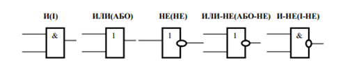
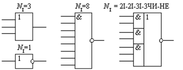
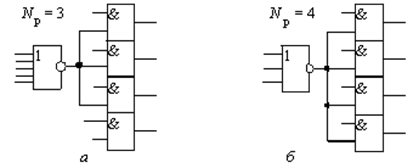

Характеристики логічних елементів
Типові системи елементів ЕОМ реалізують функціонально повні системи ФП. Умовно графічні позначення логічних елементів, що застосовуються у технічній документації і літературі відповідно ТОСТ 2.743 - 72, зображені на рисунку 5.
Рисунок 5 - Умовно графічні позначення логічних елементів
Логічні, схемотехнічні й експлуатаційні властивості логічних елементів визначаються сукупністю характеристик і параметрів, до яких відносяться:
- функції логічних елементів;
- логічні угоди;
- коефіцієнти об'єднання за входом і виходом;
- коефіцієнт розгалуження;
- швидкодія;
- потужність споживання;
- робота перемикання;
- вхідні й вихідні напруги і струми;
- статична і динамічна стійкість до перешкод;
- надійність елементів;
- допустимі розміри механічних впливів, діапазони тиску і температури навколишнього середовища, стійкість до радіаційних впливів;
- маса, вартість і конструктивне оформлення. У більшості випадків зазначені характеристики і параметри відносяться і до ІМС, на яких реалізовані логічні елементи.
Коефіцієнт об'єднання за входом NI характеризує число логічних входів логічного елемента – зазвичай 1, 2, 3, 4 або 8 (рисунок 6).
Рисунок 6. Приклади значень коефіцієнта NI
Коефіцієнт об'єднання за виходом N0 характеризує допустиму кількість з’єднаних між собою виходів логічних елементів з метою утворення нових функцій.
Коефіцієнт розгалуження за виходом Nр характеризує навантажувальну спроможність логічного елемента, тобто максимальне число входів ідентичних схем, яке може бути одночасно залучене до виходу даного елемента без порушення його працездатності (рисунок7). До складу серій ІМС зазвичай входять елементи з малою навантажувальною спроможністю (Nр = 3...15) та з великою (Nр = = 30...50) [1].
Рисунок 7. Підключення навантаження: а – Np = 3; б – Np = 4